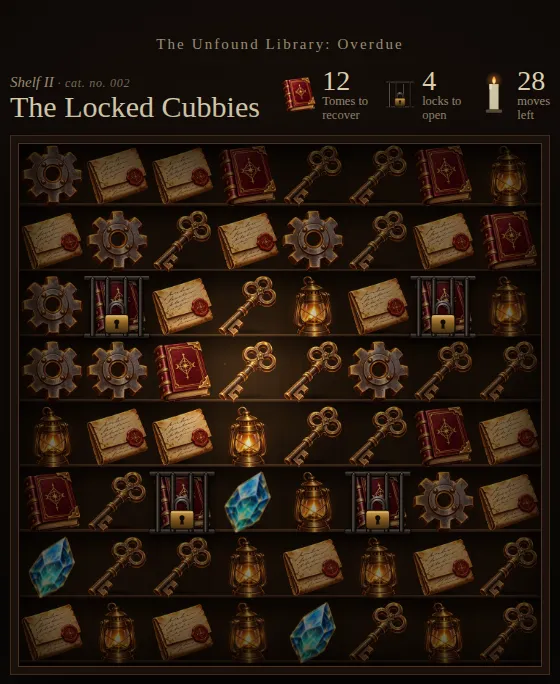
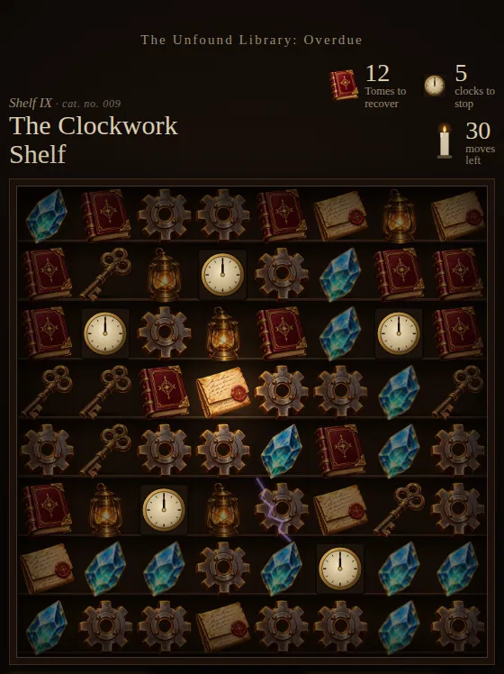
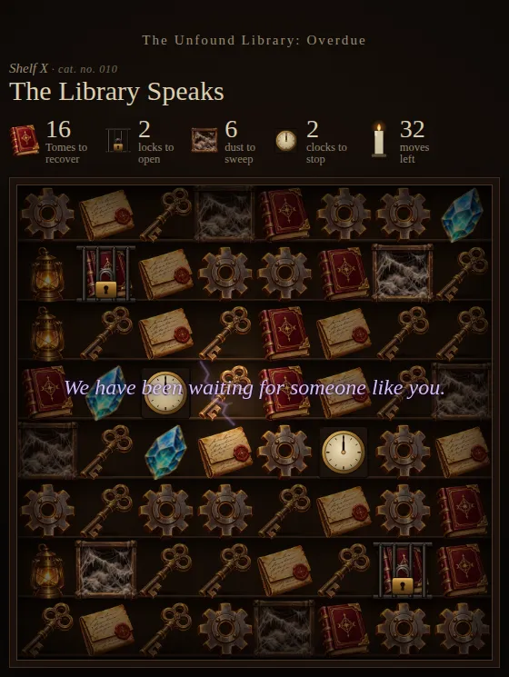

What is Overdue?
The Unfound Library: Overdue is a free match-3 puzzle game set in the Unfound Library, the dark archive hidden behind CJ's General Store. It begins as a cozy puzzle: it's after hours, the returns are piling up, and your job is to match books, keys, crystals, gears, notes, and lanterns to put the lost Tomes back where they belong.
But the Library is not an ordinary library. Shelf by shelf, small things stop adding up. A book opens an eye. A catalogue number doesn't fit. A music box starts to play on its own. By the last shelf, you will understand why some books are never meant to be found, and why the Library has been so glad to have you.



How to play
Swap two neighboring pieces to line up three or more of a kind. Recover the Tomes each shelf asks for before your moves run out. Line up four to make a charged piece that fires a beam across the shelf, and line up five (or an L or T shape of five) to make an Unfound Book, which takes every piece of one kind when you swap it.
Each shelf adds one new idea: Keys open locked cubbies, any match sweeps away dust, Gears stop clocks, and a crack in the wall hides torn pages worth finding. Finish a shelf with moves to spare to earn up to three candles.
The ten shelves of Chapter One
- I. Sorting the Shelves
- II. The Locked Cubbies
- III. Dust Sheets
- IV. The Crack in the Wall
- V. Borrowed Light
- VI. The Unfound Book
- VII. Resonance
- VIII. Static
- IX. The Clockwork Shelf
- X. The Library Speaks
Power-ups
Lantern Flare
Charged by matching Lanterns. Burns away a 3×3 patch of the shelf, locks and dust included.
Crystal Lens
Charged by matching Crystals. One free swap anywhere, whether it makes a match or not.
Hourglass
Charged by matching Gears. Three more moves when you need them most.
An original soundtrack
Every shelf has its own music, written for the game, from the quiet The Door Behind the Store to the cosmic chaos of The Static Room, The Clock Runs Backward, and The Library Speaks. Turn your sound on. For more music from the General Store, visit the Bandcamp page and the Sound Room.
Part of the lore
Overdue is a piece of the Unfound Library's story, told through play instead of print. The catalogue numbers, the torn pages you pull from the walls, and the things the Library says on the last shelf all belong to the same world as the rest of the lore. Collect every page, then wander back to the Library and the LoreKeeper Room to see where the story goes next.
Questions
- Is it free?
- Yes. It's free to play in your browser, with no download, sign-up, or ads inside the game.
- Does it save my progress?
- Yes. Your furthest shelf, best candles, and the pages you've found are saved in your browser on this device.
- Can I play on my phone?
- Yes. It works with touch on phones and tablets, and with a mouse or keyboard on a computer.
- I can't hear anything.
- Check that your sound is on. On an iPhone, make sure the silent switch is off. Music can also be switched on or off with the button under the board.
- How long is it?
- Chapter One has ten shelves and takes most players an hour or two.